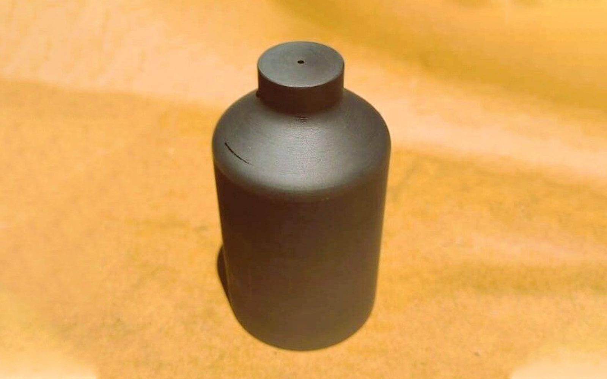
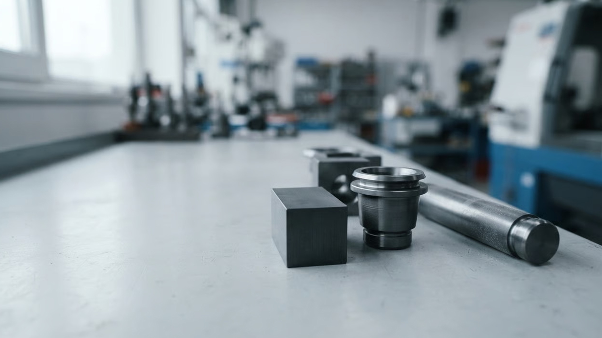
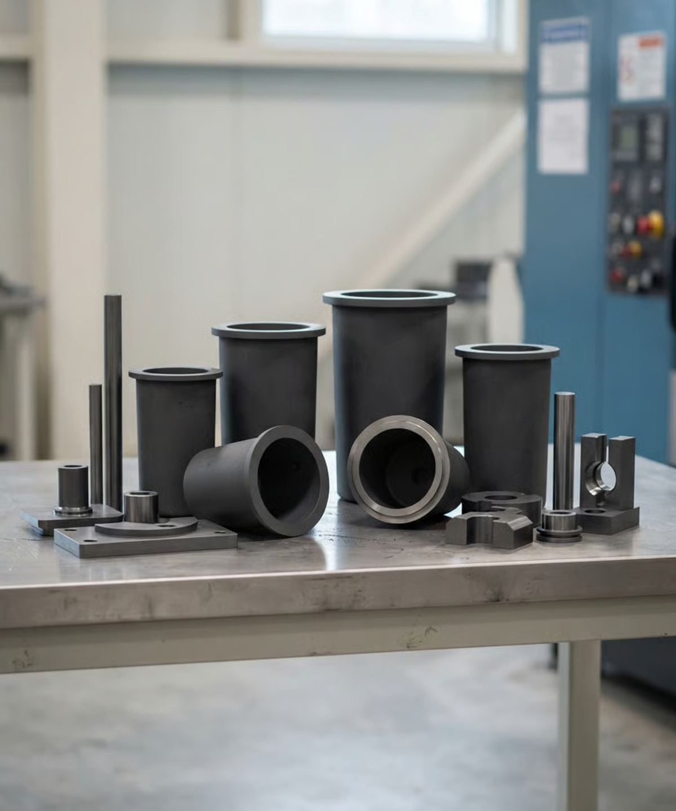
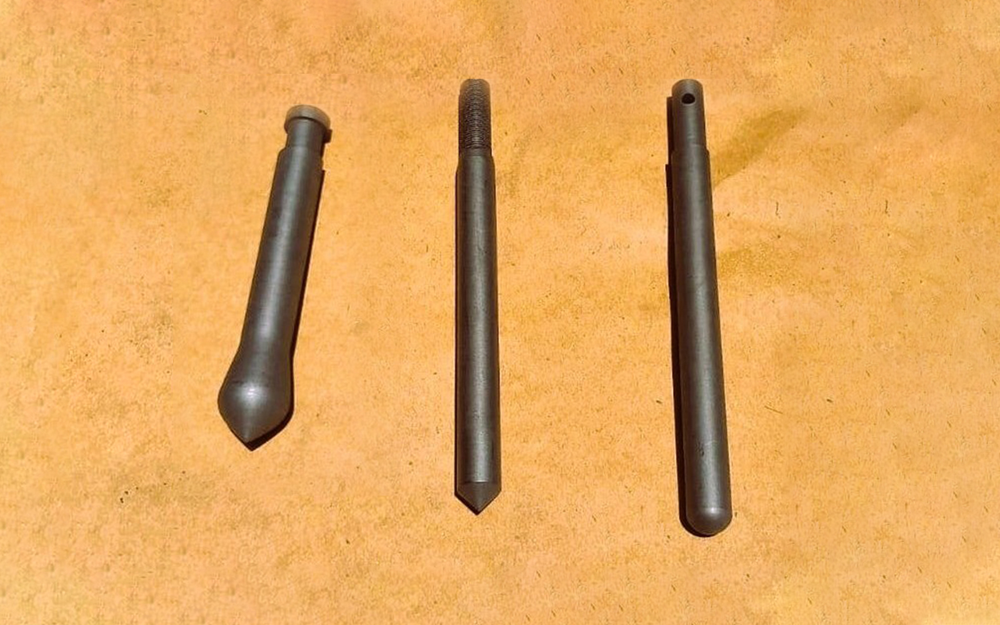
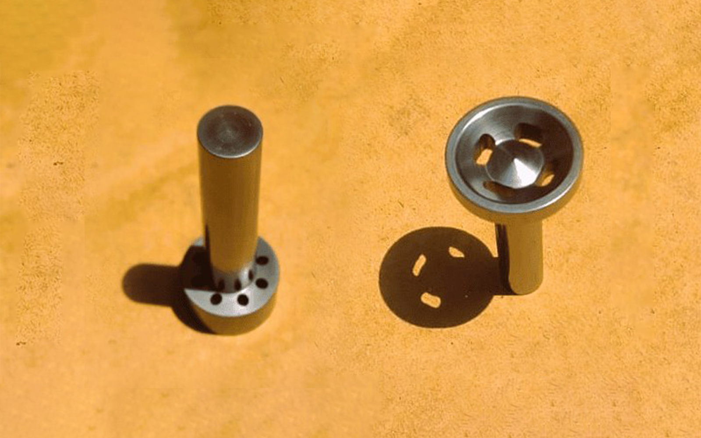
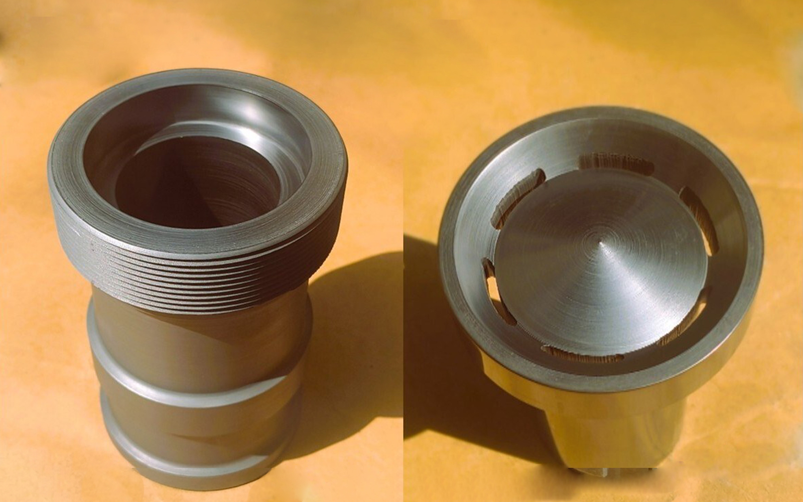
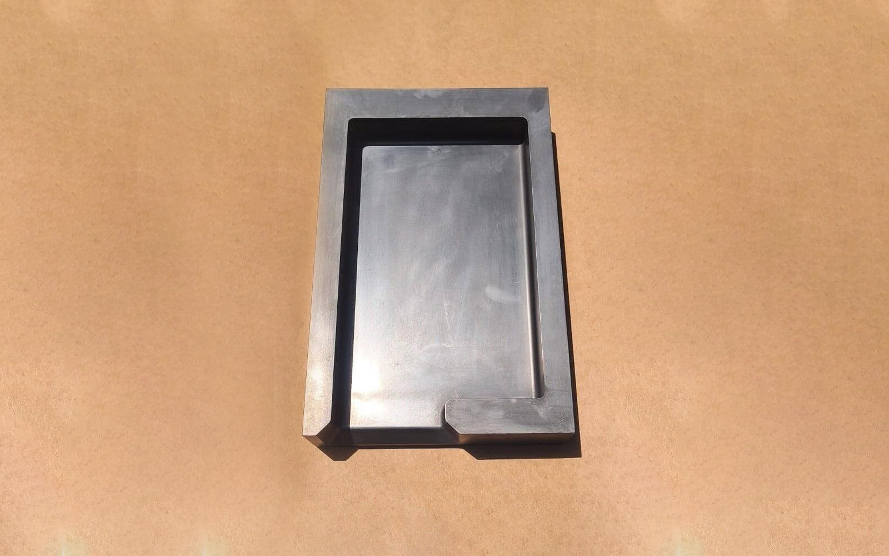
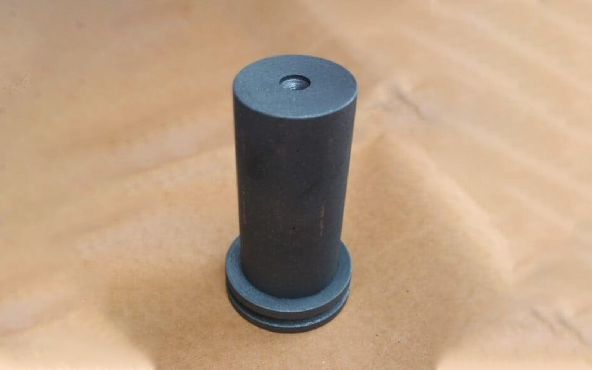
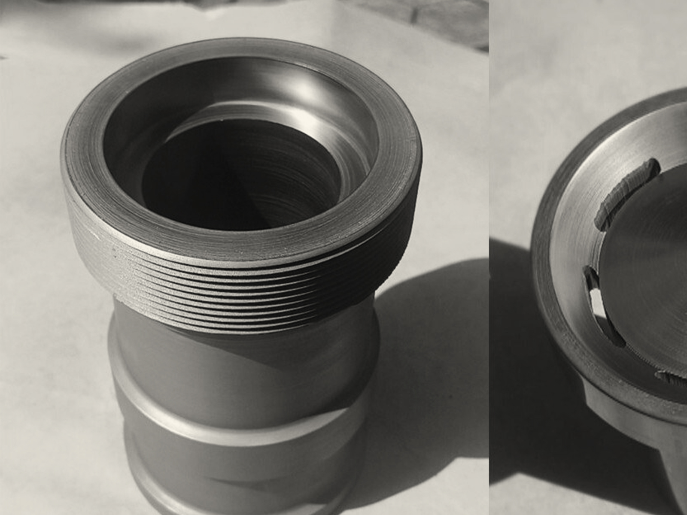

HD Graphite01 / Graining of precious metals
Modified Indutherm Graining Crucible
A modified-design graining crucible in high-density graphite for Indutherm graining machines.
View Product Details
Graphite consumables and components
Engineered graphite products and precision manufacturing solutions for demanding industrial applications.
Formerly Perfect Graphite & Electricals · Palghar, Maharashtra, India
Scroll ↓02 / Introducing Trivikram Graphite
Trivikram Graphite focuses on graphite products and precision engineered solutions for industrial applications. Combining manufacturing capabilities, material sourcing and application oriented engineering, the company aims to deliver reliable graphite solutions tailored to customer requirements.

03 / Products

HD Graphite01 / Graining of precious metals
A modified-design graining crucible in high-density graphite for Indutherm graining machines.
View Product Details
HD Graphite02 / Molten metal flow control in casting and graining machines
HD graphite stopper rods made for different casting and graining machines.
View Product Details
Graphite03 / Continuous casting of hollow sections
Graphite mandrel for continuous casting, forming the inner profile of hollow sections.
View Product Details
Isostatic HD Graphite04 / Continuous casting for kada and bangle manufacturing
Continuous casting die and mandrel sets in isostatic HD graphite for kada and bangle sections.
View Product Details
Isostatic HD Graphite05 / Ingot casting for kada production
Ingot mould machined from isostatic HD graphite for kada production.
View Product Details
Extruded Graphite06 / Melting applications
A 2 kg capacity IHD crucible made from extruded graphite.
View Product Details
04 / Manufacturing capabilities
Our manufacturing approach focuses on dimensional precision, application requirements and dependable graphite component production.
Crucibles, stopper rods, dies, mandrels and moulds are machined from graphite into the form each application calls for.
We work from your drawing, a sample part or the make and model of the machine the component will run in.
A stopper has to seat in its crucible and a die has to match its mandrel. Dimensional accuracy is the focus of our work.
We have supported the jewellery industry in import substitution by manufacturing OEM graphite consumables locally.
Graphite consumables are reordered. We aim to supply the same part, made the same way, each time you order.
When a catalogue part does not fit, tell us about the application and we will discuss what can be made.
05 / Material expertise
A graphite component performs only as well as the material it is made from. We work with specialised graphite materials and recommend one that suits your requirement.
Isostatic HD graphite
Extruded graphite
Different grades behave differently in service. The grade should follow from the metal, the temperature and the equipment.
Density influences how a component wears and how it handles molten metal over repeated use.
Where the melt must stay clean, as with precious metals, the purity of the graphite matters.
Finer, more uniform graphite can be machined to finer detail and a smoother surface.
The machine, the cycle and the expected service life decide which trade-offs make sense.
06 / Industrial applications
Graphite dies and mandrels that form the cast section in continuous casting, including sets made for kada and bangle profiles.
Graining crucibles and stopper rods used in the melting and graining of precious metals.
Graphite consumables for the jewellery industry, such as kada ingot moulds and casting dies, manufactured locally.
Graphite crucibles for melting applications, with the material chosen to suit the metal and the equipment.
Graphite parts machined to a drawing or sample when a standard consumable does not fit the job.
07 / Why Trivikram Graphite
Components machined with attention to dimension and fit.
We start from how and where the part will be used.
Crucibles, stopper rods, dies, mandrels and moulds.
Parts made to your drawing, sample or machine model.
Our own manufacturing, backed by graphite material sourcing.
Open communication, responsiveness and lasting relationships.
08 / Company and leadership
Perfect Graphite & Electricals was founded by Mr. Ganapathy Srinivasan in 2005. Trivikram Graphite Private Limited carries that work forward, now joined by his son, Mr. Rishikesh Ganapathy.
Director
Mr. Ganapathy brings over two decades of experience in procurement and more than two and a half decades of entrepreneurial leadership. He served as a Purchase Manager at Sylvex Cables for 12 years, followed by a 14-year tenure in the same role at Uni Deritend Ltd, manufacturers of investment castings. In the early 2000s he moved into entrepreneurship, first trading and later establishing his own manufacturing unit for graphite consumables. He has supported the jewellery industry in import substitution by locally manufacturing OEM products.
Managing Director
Mr. Rishikesh is a qualified Chartered Accountant, Cost Accountant and Company Secretary, with over 4 years of consulting experience in the manufacturing industry and more than 10 years in audit and risk roles within leading insurance companies. In his previous roles he led automation initiatives, helping organisations move to digital audits and manage risk on a near real time basis. He is passionate about driving innovation and contributing to the growth of Trivikram Graphite.
“Trivikram Graphite is more than just a company. It is a testament to our family’s values and our commitment to serving our customers.”Read our story
09 / Enquiry
Tell us about your application and technical requirements. Our team will help you explore suitable graphite products and solutions.
Graphite crucible, extruded graphite